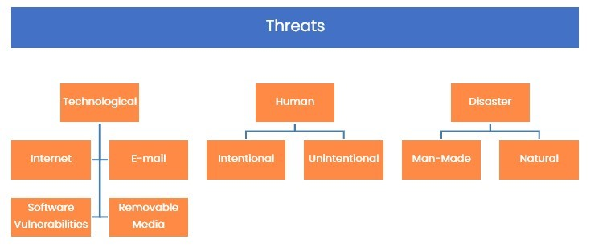

Introduction
9beca326-b493-4b0e-b3dc-d7dfb77df3c9
Welcome to the Threat Data Practice Lab. In this module, you will be provided with the instructions and devices needed to develop your hands-on skills.
dc640c20-9434-45ea-b7c2-6d4d6a196bfc
Learning Outcomes
In this module, you will complete the following exercises:
After completing this module, you will have further knowledge of:
- Zero-day Vulnerabilities
- Threat Categories
- Threat Actors
- Commodity Malware
Exam Objectives
The following exam objectives are covered in this lab:
- 1.1 Explain the importance of threat data and intelligence
Note: Our main
focus is to cover the practical, hands-on aspects of the exam
objectives. We recommend referring to course material or a search engine
to research theoretical topics in more detail.
Lab Duration
It will take approximately 1 hour to complete this lab.
89816a20-56f2-42c5-bfa0-46f11f2986ba
Help and Support
For more information on using Practice Labs, please see our Help and Support page. You can also raise a technical support ticket from this page.
Click Next to view the Lab topology used in this module.
d2c53300-f951-45a9-9aa4-3d4ecae69e11
Lab Topology
During your session, you will have access to the following lab configuration.

Depending on the exercises, you may or may not use all
of the devices, but they are shown here in the layout to get an overall
understanding of the topology of the lab.
- PLABDC01 - (Windows Server 2019 - Domain Server)
- PLABDM01 - (Windows Server 2019 - Domain Member)
- PLABKALI01 - (Kali Linux 2019 - Linux Kali)
- PLABWIN10 - (Windows 10 - Domain Member Workstation)
- PLABCENTOS - (Centos 8 Linux - Stand-alone Linux Server)
- PLABALIENVAULT - (Alien Vault Linux Security Management Platform)
Click Next to proceed to the first exercise.
<
Home |
README |
Threat and Data Intelligence >
CompTIA Cybersecurity Analyst (CySA+) Practice Labs
Exercise 1 - Threat Data
A threat is something that can potentially take
advantage of a vulnerability to gain an advantage in altering,
modifying, or deleting data or information. A threat source is someone
who triggers a threat, which can either be intentional or unintentional.
A threat actor can also trigger the threat to execute.
It is important to understand that a threat is a
probability, which has not been executed or triggered. It is a
probability that is likely to happen and exploit the vulnerability or
opportunity to take its advantage. A threat, in simplest terms, is meant
to harm, has to be triggered by someone who is the threat actor. A
threat cannot act on its own. Someone has to trigger it.
There can be different types of threats, such as:
- Intentional: Triggered by an attacker
- Unintentional: Triggered accidentally by someone, such as accidentally deleting data
- Natural: Triggered by a natural threat, such as flood or hurricane
In this exercise, you will learn about the threat data and intelligence.
Learning Outcomes
After completing this exercise, you will have further knowledge of:
- Zero-day Vulnerabilities
- Threat Categories
- Threat Actors
- Commodity Malware
Your Devices
You will be using the following device in this lab. Please power this on now.

- PLABWIN10 - (Windows 10 - Domain Member Workstation)
Zero-day Vulnerabilities
Software typically has vulnerabilities. Some
vulnerabilities are known and patched by the software vendor, however,
some vulnerabilities are discovered and then exploited (in most cases)
by different entities, such as security researchers or hackers. The
vulnerabilities are not known to anyone, including the software vendors,
and can be exploited; these are known as zero-day attacks.
It is important to note that a zero-day vulnerability
is difficult to patch because, for a single reason that you cannot patch
a vulnerability that does not exist. Remember that the software vendor
does not know that the vulnerability exists and, therefore, cannot
prepare and roll out an update to patch it.
A zero-day vulnerability can exist natively within
operating systems or applications. Hackers typically look out for
unknown vulnerabilities, and when they find it, they exploit it for
certain benefits, such as unauthorized access to data and systems. Some
hackers may ask for a reward from the software vendor, and if not paid,
they may sell it to other entities or exploit it themselves.
Microsoft runs a Security Notification Service,
which aims to send out critical notifications of Zero-Day threats as
they occur to keep security professionals as up to date as possible so
that they can be patched and actioned accordingly.
Step 1
Connect to PLABWIN10. You will be presented with the Desktop.
Figure 1.1 Screenshot of PLABWIN10: Showing the Desktop.
Step 2
Click Microsoft Edge on the Taskbar.
 Figure 1.2 Screenshot of PLABWIN10: Showing the Practice Labs Intranet inside of Microsoft Edge.
Figure 1.2 Screenshot of PLABWIN10: Showing the Practice Labs Intranet inside of Microsoft Edge.
Step 3
In the Navigation Bar, type the following:
https://www.microsoft.com/en-us/msrc/technical-security-notifications
Press Enter.
Figure
1.3 Screenshot of PLABWIN10: Showing Microsoft Edge, with the Microsoft
Technical Notifications website page typed into the Navigation bar.
Step 4
Here we can see the option to sign up for Security E-mail Update Alerts. Click the Security Notification Service hyperlink.
Figure
1.4 Screenshot of PLABWIN10: Showing the Microsoft Technical Security
Notifications webpage, with the Security Notification Service hyperlink
highlighted.
Step 5
Here you will be directed to the Microsoft Live Login page.
If you were to login using either a personal or professional E-mail
address, you have the option to sign up for this mailing list.
Figure 1.5 Screenshot of PLABWIN10: Showing the Microsoft Security Notification Service.
Threat Categories
A threat can occur due to different reasons. Therefore,
you can classify a threat into three different categories,
technological threats; which includes the Internet, E-mail, Software
Vulnerabilities and Removable Media, human threats; which can be
intentional and unintentional, and disaster-related threats; both
natural and man-made.
Figure
1.6 Diagram showing the hierarchy of threats: Showing the three main
categories of threats and then also showing the sub-categories of each
of the categories.
Let’s look at each of them in detail.
Technological Factors
Various threats occur because of various technical
factors. With the new advancements in technology, new threats keep
emerging. The main sources of threats in technology are
- Internet: Is the main threat source. Several
attacks occur using the Internet. If your servers are present on the
Internet, they can be vulnerable to several threats, such as
denial-of-service (DoS) or Distributed DoS (DDs).
- Email: Is considered to be the main carrier of a
major threat, which is malware. Millions of users receive Emails with
malicious software, which gets triggered when the users click on them.
The malicious software or malware is designed to infiltrate data from
the system or the network.
- Software Vulnerabilities Are the main source of
threats in applications and operating systems. If the vulnerabilities
are not patched, then they can be exploited by the threat actors.
- Removable media: Is another main source of
malware. If a removable media is infected with malware, when plugged
into a system, it can also infect the system.
Human
These are individuals or groups of individuals are who
exploit the threat. These individuals can be the main source of threats
inadvertently or deliberately. For example, a novice hacker hacks into a
live Website to test his or her skills. This is an inadvertent act. On
the other hand, a hacker exploits a vulnerability and gains access to
the application or system is the deliberate act.
Threats in this category can also be further classified
as internal or external. An internal employee who accidentally deletes
the critical data perform the inadvertently act. On the other hand, an
internal employee who deletes a critical folder before leaving the
organization performs the deliberate act. Threats, such as a hacker, can
be considered as an external threat source.
Disasters
A disaster can either be human-made or natural.
Earthquake, flood, and storm natural threats that cannot be controlled.
They are beyond any human control. On the other hand, human-made
disasters are threats that can be controlled. For example, a riot breaks
out in the same region that has your datacenter. This type of disaster
can still be prevented.
Threat Classifications
Threats can also be classified into different types. These are:
- Zero-day vulnerabilities
- Known threats vs. unknown threats
- Advanced Persistent Threats (ATP)
We have already discussed Zero-day vulnerabilities, so let’s look at the others in more detail.
Known Threat vs. Unknown Threat
A threat can be known or unknown. A known one is a
threat that the organization has encountered before or has the security
controls to tackle it if it occurs. A good example in this context would
be DDoS that can occur and is a known threat. The organization knows
that if proper security controls are not implemented, a DDoS attack can
occur. Therefore, the organization configures the security controls,
such as a firewall.
Unknown threats, on the other hand, is a type of
threat that is not known to the organization, which has to actively
monitor the infrastructure and try to locate them. A zero-day
vulnerability can be an example of an unknown threat. It is not known to
the organization, but there is a high possibility that it may be
present in the applications that the organization uses. Unknown threats
usually occur because the attackers continue to find new methods to
conduct the attacks.
There is quite a possibility that the organization’s
infrastructure may also fail to detect a known threat. This can happen
because the defensive security controls fail to detect the known threat.
Advanced Persistent Threat (APT)
In a traditional attack, a hacker gets into the
system, does the damage, and moves out. However, APT attacks are
different. The attacker gains access to the system or network and stays
there for a long time without being detected. The security controls fail
to detect APT attacks.
Unlike the traditional attack, which may cause damage
to the system or network and get detected in a short period, the APT
attacks quietly keep exfiltrating the data without being detected. The
APT attacks usually do not cause damage and, therefore, do not attract
attention. Since there are no noticeable activities within the systems
or the network, these attacks go unnoticed and manage to exist within
the network or system for a long time.
APT attacks have several characteristics that set them apart from traditional threats:
- Well-targeted
- Data focused
- Looks for high-value information
- Un-detectable
- Well organized
- Well-funded
People conducting APTs are highly skilled and use sophisticated methods. They look for valuable information, such as:
- Intellectual property (IP) secrets
- Design
- Critical business information
It is not necessary that the APTs only focus on the
large organization for data. They can also target political parties and
even nations. With the nations, they can target critical
infrastructures, such as the power grid or the nuclear facilities. Below
is a diagram of the process that ATP follows, from defining and
researching targets, compiling intrusions, compromising user
credentials, moving laterally, staying low profile, exfiltrating data
and covering your tracks:
Figure 1.7 Diagram showing the ATP process: Showing the various stages of an ATP attack.
Threat Actor
Threat actors are the entities who are the originators of the threats. Threat actor can be:
- Internal, such as disgruntled employees
- Malicious intruders, such as hackers
- Natural disasters, such as floods
Threat actors can be individuals or groups. These can
range from a script kiddie, which uses scripts developed by someone, to
someone who is highly expert in conducting attacks, such as a
nation-state. A script kiddie would be low skilled, but when a
nation-state would use highly advanced methods of conducting attacks.
There can be different types of threat actors, which
could be either internal or external. It is important to understand that
every threat actor can use different types of threat vectors, which are
the methods used by the threat actors. Threat vectors also include
processes and tools that are used by the threat actors. Threat actors
can be of different types, such as external and internal. Let’s look at
each one of them.
External
These are typically hackers, script kiddies,
hacktivists, and nation-states. The external threat actors have the goal
of exploiting the vulnerabilities and the systems. The external threat
actors can be individuals, groups, or organizations, who, by illegal
means, access the systems and networks that they are not authorized to
access.
Mostly, except for the script kiddies, the external
threat actors use sophisticated methods to conduct attacks. They have
custom tools for attacking the organizations, political parties, or the
government infrastructure.
Internal
The internal threat actors are the ones who are part
of an organization. They intentionally or unintentionally cause damage
to an organization. As part of the organization, they are typically
employees or third-party vendors who have access to the resources. The
threat generated by the internal threat actors can be intentional or
unintentional.
Third-Party Vendors / Partners
Other than external or internal threat actors, they
are third-party vendors or partners who have a deep association with the
organization. They also have access to the resources within the
organization. Therefore, they can also be a threat actor by causing
intentional or unintentional damage to the organization’s resources.
Nation-state
Nation-states are known for their cyber espionage
against the nations. They are hired by a government to conduct an attack
against the government of another nation. These are hackers who have
sophisticated methods and techniques that they use to conduct the
attacks and can target some of the following:
- Government agencies
- Critical infrastructure
- Industries with sensitive data or property
In most cases, the nation-state hackers use custom
tools and target the zero-day vulnerabilities and other vulnerabilities
that have been known but are still present in the application and
operating system.
One of the key attributes of the nation-state is that
they are highly covert, and therefore, most of the attacks conducted by
them rarely come into the news. They, however, are highly focused and
have a set target whom they exploit.
Hacktivist
A hacktivist is a hacker who performs hacking for
either a political reason or wants to bring in a social change. A
hacktivist may perform a hacking due to the ideological difference with
the government or a political party. The attacks performed by the
hacktivist to gain attention towards their ideology or to highlight
their intention of social change. In most basic terms, you can call them
the Internet version of activists.
A hacktivist can also be part of a group that acts as a
team. They often use simple methods of attacks. Distributed Denial of
Service or DDoS or DoS is often a key method of attack on the
government’s Web infrastructure, such as government portals.
Most famous hacktivist groups:
- Anonymous: Known for famous attacks, such as
Fine Gael website, Operation Tunisia, Operation Egypt, Operation Syria,
Operation DarkNet, AntiSec Leak, and CIA attack.
- LulzSec: Known for famous attacks, such as Sony data breach, and Sony PlayStation Network hack.
Organized Crime
organized crime turns out to be one of the biggest
threats on the Internet. Unlike some hackers, who are into hacking for
either fun or causing some level of damage, the organized crime hackers
are serious criminals. They have moved away from the traditional crimes
to hacking in cyberspace. Organized criminals are individuals who are
multi-skilled and have sophisticated methods in conducting their
attacks.
The hackers conducting organized crime are no novices
with basic tools in conducting the attacks. Rather, these guys are into
causing some of the serious damages to the organizations, such as:
- Extorting money using ransomware
- Stealing intellectual property
- Stealing industrial secrets and confidential organizational information
They use sophisticated tools, such as:
- Botnets
- Automated exploit kits
- Cloud-based services
Insider threat
Insider threats are generated by the individuals who
are either the employees of an organization or closely associated with
the organization as a vendor or third-party. It is difficult to detect
insider threats because insiders are virtually difficult to detect as
attackers.
Consider an example when the attacker tried to hack
into your network. There are various security controls, such as a
firewall, blocking access. However, in the case of the insider, they do
not have to face the perimeter security, or the security controls
configured on the edge of the network. The insiders are already inside
the network and have access to the various resources on the network.
The insiders are usually not seen as a threat to the
organization’s resources. They have legitimate access to the resources
that exist on the network. Several insiders may have more than the
required access, and they can access and, in some cases, exploit the
weakness that may exist within the network and its resources.
Motives
There are different motives for an insider threat that
can be divided into two different categories: personal motives and
organizational factors.
The examples of personal motives can be anger,
revenge, ideology, divided loyalty, ego, self-image, ingratiation, or
family problems.
As far as organizational factors are concerned, some
of the key examples can be time pressure, no training, no classification
of confidential information, or easy access to the resources or the
facility of the organization.
Types of insiders
There can be different types of insiders:
Pure Insider
A pure insider is a person who is part of the
organization. He or she is a legitimate user. The pure insider has
permissions and privileges on the internal network and its resources of
the organization. The pure insider also has the user account based on
which he or she connects with the network to access the resources. He or
she has the most capable of causing maximum damage.
Insider Associate
An insider associate is someone who is not directly
the part of the organization, but he or she is a third-party vendor or a
contractor. The insider associate can also be the security guard or
even a receptionist who can be a contractual resource. They can have
limited access to the network resources or even the facility where your
organization has the office. For example, a security guard may simply
have access to the papers that are left in the open on the employees’
desk. Some of the papers may contain confidential information. Now, this
information can be passed on to a malicious entity.
Insider Affiliate
An insider affiliate is someone who can be a spouse, a
friend, or someone who has a connection with an employee. This person
can obtain the information, such as user credentials or security badge
from the employee and access the network or even the facility.
Outsider Affiliate
The outside affiliates are the external entities,
which are not employees or do not have a connection with the employee.
The outsider affiliate can attempt to find the entry into the facility
or the network using different methods. It could be through obtaining
credentials of an individual or breaking into a wireless network and
gaining access to the network.
There can be two types of insider threats:
- Intentional
- Unintentional
Intentional
There can be insiders who have access to the internal
network and also its resources. They are the entities who have a reason
to conduct malicious intent. Some examples are anger, revenge, ideology,
divided loyalty, or even the work that he or she is doing.
It could also be that these entities can work for
personal gain, something like a monetary gain. They may steal the
information and sell it to outsiders, such as competitors. In some
cases, these entities have access to confidential and restricted
information. An example can be a personal assistant to the CEO of the
organization, who would have access to his various resources, such as
Email and other confidential information, such as budgets.
If the secretary decides to sell this confidential
information, or someone simply triggers him/her to share the
information, then the company’s entire security paradigm becomes simply
useless.
In this scenario, if the secretary steals and shares
the information to a malicious entity, the entire set of security
controls within the organization network or on its perimeter network
becomes useless.
Unintentional
Unintentional insiders are the ones who do not have
any malicious intentions but accidentally become a threat to the network
and its resources. It is important to understand that these entities do
not have any malicious intent, but the activities they perform can be
malicious even though they are unintentional.
Some of the unintentional activities that may perform are:
- Accidental data deletion
- Accidental data modification
- Incorrect usage of privileges
The consequences of an unintentional act can also be
as dangerous as the intentional act. For example, a healthcare
professional makes incorrect modifications to various patients’ data.
This can be considered a serious mistake because the doctor, based on
medical history, may end up giving the wrong medicine to the patient.
Such an unintentional attack may occur due to the lack of attention, but
the consequences can be serious.
Commodity Malware
Malware is typically developed by hackers on their
own. They develop it keeping a specific attack in mind. Such malware is
highly customized to meet the requirements of the hackers.
However, it is important to understand that not
everyone can program malware. In such a situation, a threat actor may
look for ready-made malware that is available. Such malware that is
available in the underground malware is known as commodity malware.
The commodity malware can either be free or purchased,
which are typically available in the underground Web. The threat actor
can purchase it from the underground Webby, paying some amount in
cryptocurrency, such as bitcoin. It is also possible that the malware
can be distributed using online storage platforms, such as GitHub,
Google Drive, or BitBucket.
However, online storage platforms scan the uploads for
malware detection. To avoid any type of malware detection, the malware
developers using various tools:
- Themida
- CypherIT Autoit
- Emotet
These applications put an extra layer of protection on the malware, which helps it evade any type the malware detection.
The commodity malware is available in the “as-is”
model, which means that they are not customized. Such malware is focused
on the existing vulnerabilities of one or more software.
dc2a295a-ab17-4b52-8e1c-80389d10a470
86b3caf2-2504-4e20-a81b-2fcb2368c8d2
Review
Well done, you have completed the Threat Data Practice Lab.
2abaca70-efa1-4fe5-94fb-ad1777bfc242
34afd89a-c34f-4672-86fc-b11d9072cc98
2405ac41-4706-4e89-87af-541d11719199
69018a69-3b8e-4b9a-9e87-d926d8d89b43
899b7de3-eccb-4f97-953c-c47624cb695a
d67cb178-638c-4a4e-b237-cde8c20f3cbe
aaaaaaaa-1111-1111-1111-193f35a24fe3
Summary
You completed the following exercises:
You should now have further knowledge of:
- Zero-day Vulnerabilities
- Threat Categories
- Threat Actors
- Commodity Malware
Feedback
067744a4-4299-4662-b5be-04dbb636a007